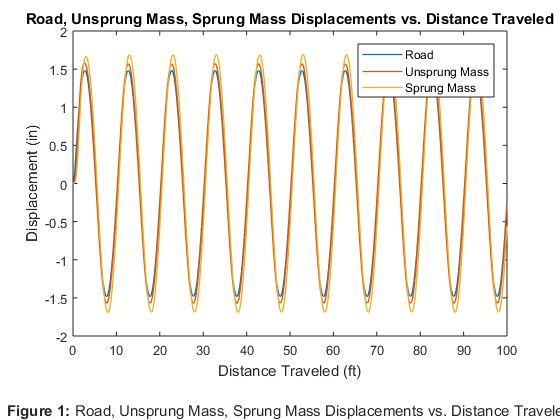
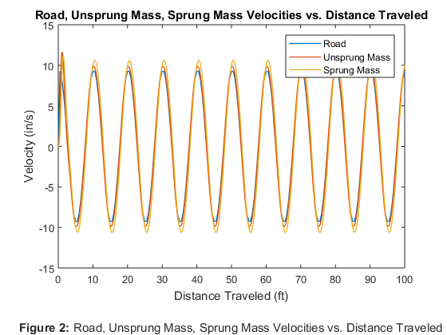
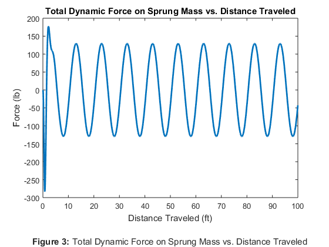
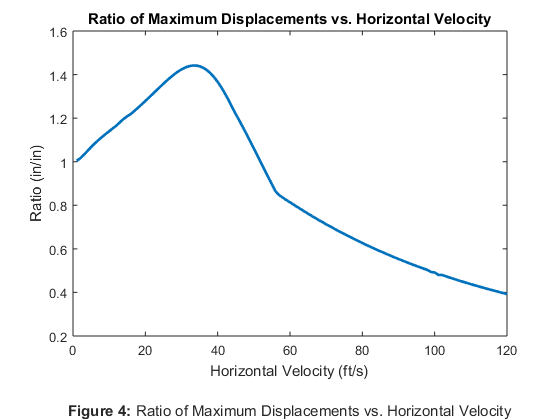

Rahul_Goyal_main Usage and Description
ME 326 Winter 2018 - Laboratory Assignment #3a
Author: RAHUL GOYAL
California Polytechnic State University, San Luis Obispo, CA
Date Created: January 23, 2018
Date Modified: January 30, 2018
Description: This script simulates the suspension of a quarter-car, modeled with state-space representation. The model is evaluated utilizing two separate techniques. The first technique uses ode45 to solve xdot = A*x + B*u for x, then uses matrix multiplication to solve y = C*x + D*u for y. The second technique uses ss to convert A, B, C, D to a state-space system object, then uses lsim to solve it for y. Additionally, the script then compares the max vertical displacement of the car's unsprung mass to the max vertical displacement of the road as a function of the horizontal velocity of the car.
Required Files:
- road_slope_data.mat - This file contains data on the slope of the road used in the simulation. The slope is provided at every half foot for a mile.
- CarEOM.m - This file contains a function that represents the equations of motion for the simulation. It returns xdot with inputs of time, x, the A and B state-space matrices, the slope data, and the horizontal velocity of the car.
Called Functions
Still To Do:
- Done!
Contents
- Problem Statement
- Reset
- Set Values
- Given Values
- Solved Values
- Simulating the Quarter-Car Using ode45
- Simulating the Quarter-Car Using lsim
- Displacements of the Road, Unsprung Mass, and Sprung Mass vs. Distance Traveled
- Velocities of the Road, Unsprung Mass, and Sprung Mass vs. Distance Traveled
- Total Dynamic Force on Sprung Mass vs. Distance Traveled
- Ratio of Maximum Unsprung Mass Displacement to Maximum Road Displacement vs. Horizontal Velocity
- Discussion
Problem Statement
Consider the quarter-car suspension model for one wheel on a moving vehicle. The wheel is modeled as the springiness of the tire and the unsprung mass, and the suspension separates the wheel from the sprung mass representing the car-body portion of the quarter-car. Use the following parameter values: wc = 750 lb, wu = 85 lb, ks = 200 lb/in, bs = 60 lb · s/in, and kt = 1600 lb/in. Neglect gravitational effects during this analysis; that is, represent deviations from the static equilibrium position of the quarter-car.
Reset
The following was used while debugging.
close all; clear all; clc;
Set Values
The following is used to easily change the set horizontal velocity of the car.
v_x = 10; % Horizontal velocity of car (ft/s)
Given Values
The following assigns values given by the problem statement to variables. (The value of the gravitational constant is assumed). Additionally, it loads the given slope data of the road.
% Given Values w_c = 750; % Weight of car's sprung mass (lb) w_u = 85; % Weight of car's unsprung mass (lb) k_s = 200; % Spring constant of the suspension (lb/in) b_s = 60; % Damping coeff of the suspension (lb*s/in) k_t = 1600; % Spring constant of tire (lb/in) g = 32.174*12; % Gravitational constant (in/s^2) % Given Data load road_slope_data; % Load road (unused), slope arrays % Initial conditions (y_r, y_u, y_c, yu_dot, yc_dot) ICs = [0; % Road displacement (in) 0; % Car's unsprung mass dispacement (in) 0; % Car's sprung mass displacement (in) 0; % Car's unsprung mass velocity (in/s) 0]; % Car's sprung mass velocity (in/s) % Time initial and time final t_0 = 0; % Initial time (s) t_f = 10; % Final time (s) % Time step for lsim t_step = 0.001; % Time step (s)
Solved Values
The following assigns values derived and/or solved from the given values to variables. See the attached sheet for hand calculations.
% Solved Values m_c = w_c/g; % Mass of car's sprung mass (slinches) m_u = w_u/g; % Mass of car's unsprung mass (slinches) % State-Space Matrices A = [0, 0, 0, 0, 0; 0, 0, 0, 1, 0; 0, 0, 0, 0, 1; k_t/m_u, -(k_s+k_t)/m_u, k_s/m_u, -b_s/m_u, b_s/m_u; 0, k_s/m_c, -k_s/m_c, b_s/m_c, -b_s/m_c]; B = [1; 0; 0; 0; 0]; C = [1, 0, 0, 0, 0; 0, 1, 0, 0, 0; 0, 0, 1, 0, 0; 0, 0, 0, 0, 0; 0, 0, 0, 1, 0; 0, 0, 0, 0, 1; 0, -k_s, k_s, -b_s, b_s]; D = [0; 0; 0; 1; 0; 0; 0];
Simulating the Quarter-Car Using ode45
The following solves the differential equation xdot = A*x + B*u using ode45. Because ode45 does not return the u values (in this case, the vertical component of the velocity of the car) corresponding to the time and x values it returns, the main script finds them by solving for the corresponding distance values, from which it interpolates the corresponding slope values, from which it solves for the corresponding u values, the vertical component of the velocity of the car. Then, knowing the x and u values, the script solves y = C*x + D*u using matrix multiplication.
% Quarter-Car Differential Equation Setup CarODE = @(t, x) CarEOM(t, x, A, B, slope, v_x); % Solve for x (and store corresponding time values) [t_ode45, x_ode45] = ode45(CarODE,[t_0, t_f], ICs); % Debugging statement % plot(t_ode45, x_ode45); % Plots x (5 variables) vs. time (ode45) xr_ode45 = v_x*t_ode45; % Corresponding distance values (ft) % Interpolate corresponding slope values from road_slope_data mr_ode45 = interp1(slope(:, 1), slope(:, 2), xr_ode45); % (in/ft) u_ode45 = v_x*mr_ode45; % Corresponding u (yr_dot) values (in/s) % Solve for y y_ode45 = C*x_ode45' + D*u_ode45'; % Debugging statement % plot(xr_ode45, y_ode45); % Plots y (7 variables) vs. x_r (ode45)
Simulating the Quarter-Car Using lsim
The following creates a state-space system object of A, B, C, D using ss. Because lsim requires a time input, the main script creates a list of time values. Additionally because lsim requires a u input (in this case, the vertical component of the velocity of the car) corresponding to each time, the main script finds them by solving for the corresponding distance values, from which it interpolates the corresponding slope values, from which it solves for the corresponding u values, the vertical component of the velocity of the car. Then, knowing the state-space system object, u values, and t values, the script solves for y using lsim.
% State-Space System Object sys = ss(A, B, C, D); t_lsim = t_0:t_step:t_f; % Time values (s) xr_lsim = v_x*t_lsim; % Corresponding distance values (ft) % Interpolate corresponding slope values from road_slope_data mr_lsim = interp1(slope(:, 1), slope(:, 2), xr_lsim); % (in/ft) u_lsim = v_x*mr_lsim; % Corresponding u (yr_dot) values (in/s) % Solve for y y_lsim = lsim(sys, u_lsim, t_lsim); % Debugging statement % plot(xr_lsim, y_lsim) % Plots y (7 variables) vs. x_r (lsim)
Displacements of the Road, Unsprung Mass, and Sprung Mass vs. Distance Traveled
The following plots the vertical displacements of the road, unsprung mass, and sprung mass as a function of the horizontal distance traveled. The data used is from the lsim simulation directly above.
As logically expected, the displacement of the car's sprung mass slightly lags the displacement of the car's unsprung mass, which slightly lags the displacement of the road. The amplitudes of each displacement vary; running the simulation with a different horizontal velocity of the car significantly affects the manner in which these amplitude vary. In the simulation below, the horizontal velocity of the car is 10 ft/s, a value I chose because it is small enough to distinguish the sinusoidal-esque shape of the plot but large enough to show an easily visible difference in the amplitudes. At this horizontal velocity, the vertical travel of car's sprung mass is larger than the vertical travel of the car's unsprung mass, which is larger than the vertical displacement of the road. Comparing the vertical travel of the car's sprung mass directly to the vertical displacement of the road indicates that the suspension (at this horizontal velocity of the car, at least) behaves ineffectively -- the purpose of suspension is to lessen the vertical travel of the car's sprung mass (that is, the humans and most of the car) relative to the vertical displacement of the road. As it is later explored, this suspension is more effective at certain horizontal velocities of the car than it is at others.
plot(xr_lsim, y_lsim(:, 1:3), 'LineWidth', 1); title('Road, Unsprung Mass, Sprung Mass Displacements vs. Distance Traveled'); xlabel({'Distance Traveled (ft)' '' % Figure label '\bfFigure 1: \rmRoad, Unsprung Mass, Sprung Mass Displacements vs. Distance Traveled'}); ylabel('Displacement (in)'); legend('Road', 'Unsprung Mass', 'Sprung Mass');
Velocities of the Road, Unsprung Mass, and Sprung Mass vs. Distance Traveled
The following plots the vertical velocities of the road, unsprung mass, and sprung mass as a function of the horizontal distance traveled. The data used is from the lsim simulation above.
The analysis of this plot falls in line with the analysis of the previous plot. Additionally, each graph resembles, as it should, the derivative of its respective displacement graph.
plot(xr_lsim, y_lsim(:, 4:6), 'LineWidth', 1); title('Road, Unsprung Mass, Sprung Mass Velocities vs. Distance Traveled'); xlabel({'Distance Traveled (ft)' '' % Figure label '\bfFigure 2: \rmRoad, Unsprung Mass, Sprung Mass Velocities vs. Distance Traveled'}); ylabel('Velocity (in/s)'); legend('Road', 'Unsprung Mass', 'Sprung Mass');
Total Dynamic Force on Sprung Mass vs. Distance Traveled
The following plots the total dynamic force on the car's sprung mass as a function of the horizontal distance traveled. The data used is from the lsim simulation above.
A negative force corresponds to an upward force on the car, as per the free body diagram drawn in the hand calculations. The initial "dip" at the very beginning of the plot is a result of the sudden change of slope from 0 in/ft to ~1 in/ft in just 0.5 feet of travel distance.
plot(xr_lsim, y_lsim(:, 7), 'LineWidth', 2); title('Total Dynamic Force on Sprung Mass vs. Distance Traveled'); xlabel({'Distance Traveled (ft)' '' % Figure label '\bfFigure 3: \rmTotal Dynamic Force on Sprung Mass vs. Distance Traveled'}); ylabel('Force (lb)');
Ratio of Maximum Unsprung Mass Displacement to Maximum Road Displacement vs. Horizontal Velocity
The following calculates the ratio of the maximum vertical displacement of the car's unsprung mass to the maximum vertical displacement of the road for various horizontal velocities of the car. In a for loop (iterating through each horizontal velocity of the car from 1 ft/s to v_f ft/s), the script solves for y using the same process as the lsim simulation above, calculates the ratio of y_c to y_r, then stores the ratio for later use before beginning the next iteration. Note that the state-space system object needed for lsim is the same as the one used is the lsim simulation above, so it is not recreated here.
v_f = 120; % Final horizontal velocity iteration (ft/s) t_loop = t_0:t_step:t_f; % Time values (s) ratios = zeros(1, v_f); % List to store ratios % Iterate through horizontal velocities from 1 ft/s to v_f (ft/s) for v_i = 1:v_f xr_loop = v_i*t_loop; % Corresponding distance values (ft) % Interpolate corresponding slope values from road_slope_data mr_loop = interp1(slope(:, 1), slope(:, 2), xr_loop); % (ft/s) u_loop = v_i*mr_loop; % Corresponding u (yr_dot) values (in/s) % Solve for y y_loop = lsim(sys, u_loop, t_loop); yr_max = max(y_loop(:, 1)); % Max road displacement (y_r) (in) yc_max = max(y_loop(:, 3)); % Max unsprung mass displacement (y_c) (in) % Store ratio of max y_c to max y_r (in/in) ratios(v_i) = yc_max/yr_max; end
The following plots the ratio of the maximum vertical displacement of the car's unsprung mass to the maximum vertical displacement of the road as a function of the horizontal velocity of the car.
The purpose of suspension is to lessen the vertical travel of the car's sprung mass (that is, the humans and most of the car) relative to the vertical displacement of the road. Therefore, a ratio between vertical displacement of the car's unsprung mass to the vertical displacement of the road would ideally be as small as possible, and definitely less than 1. The plot shows that for speeds between 1 ft/s and 51 ft/s, the ratio is greater than 1; for these range of horizontal velocities, the suspension is ineffective. The plot shows that for speeds between 52 ft/s and 120 ft/s, the ratio is less than 1; for these range of horizontal velocities, the suspension is effective. The plot exhibits a downward trend of ratios with increasing velocity after 52 ft/s; the greater the horizontal velocity of the car after 52 ft/s, the smoother the ride. It is reasonable to assume that the downward trend continues for the higher horizontal velocities the car can have.
% Plot plot(1:v_f, ratios, 'LineWidth', 2); title('Ratio of Maximum Displacements vs. Horizontal Velocity'); xlabel({'Horizontal Velocity (ft/s)' '' % Figure label '\bfFigure 4: \rmRatio of Maximum Displacements vs. Horizontal Velocity'}); ylabel('Ratio (in/in)');
Discussion
This model is valid as long as the small angle approximation is valid for both the longitudinal and lateral tilt of the car. Using the velocity of the car, the model assumes that the horizontal velocity of the car is equal to the velocity of the car and that the vertical velocity of the car is equal to the slope times the (horizontal) velocity of the car. Additionally, the model assumes that vertical displacement and "velocity" of the road are inline with the travel of the suspension. However, for an input of a slope large enough, the longitudinal tilt won't reasonably satisfy the small angle approximation, thereby causing the calculated horizontal and vertical velocities of the car and the effect of vertical displacement and "velocity" of the road to be imprecise. As a correction, the horizontal and vertical velocities of the car can be recalculated without the small angle approximation and the displacement and "velocity" of the road used should be perpendicular to the car.
This model neglects gravitational effects because it assumes the suspension's static equilibrium includes the force of gravity. The model then calculates displacements, velocities, and force as deviations from static equilibrium. This describes the general displacements, velocities, and force if the static equilibrium is assumed to remain constant. However, the static equilibrium can change, most notably by the shape of the road. For example, the upward-pointing normal acceleration vector at a concave up road will increase the normal force on the car from the road, causing the suspension to compress, and the downward-pointing normal acceleration vector at a concave down road will decrease the normal orce on the car from the road, causing the suspension to extend. Additionally, a car travelling fast enough along a concave down road that "curves away" too quickly (that is, the force of gravity alone is not enough to accelerate the car downwards to follow the curvature of the road) can experience a period of time being airborne. Thus, depending on a combination of the velocity of the car and the rate of change of the slope, the static equilibrium will shift; this effect can be added into the model for an even more accurate simulation.